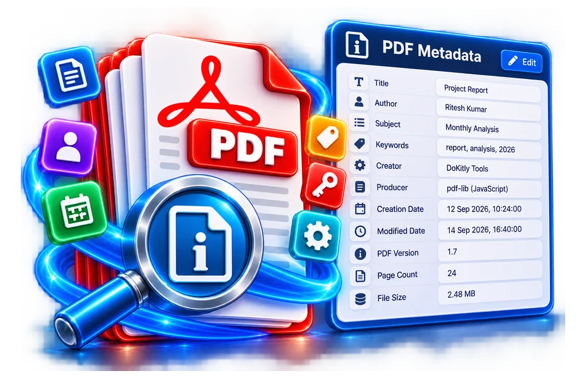

Open the source PDF file
Inspect title, author and creation fields in a document and distinguish metadata from content.
View title, author, subject and PDF information.
Metadata describes properties such as title, author or creation date.

Inspect title, author and creation fields in a document and distinguish metadata from content.
Inspect PDF author, title and metadata fields.
Metadata is not proof of document authenticity.
Inspect title, author and creation fields in a document and distinguish metadata from content.
A PDF metadata panel might list a title, software producer and creation timestamp. Those fields can be absent, wrong or modified after the document was created.
Use the real tool above to verify the result. The example illustrates the workflow, not a guaranteed outcome.
A PDF metadata panel might list a title, software producer and creation timestamp. Those fields can be absent, wrong or modified after the document was created.
Treat metadata as descriptive clues, not a chain of custody. For legal authenticity use trusted signatures and supporting records.

Metadata describes properties such as title, author or creation date.
Inspect title, author and creation fields in a document and distinguish metadata from content.
A PDF metadata panel might list a title, software producer and creation timestamp. Those fields can be absent, wrong or modified after the document was created.
A PDF metadata viewer can reveal fields such as title, author, subject, keywords, producer, creation date and modification date where the document contains them. These are descriptive values, not necessarily trustworthy proof. A PDF may show "Annual Report" as its internal title even when the filename is report-final.pdf; the viewer's display label and the embedded title are separate. A document can also have blank or conflicting metadata fields. Use the output to understand the current file, not to authenticate its origin.
Some PDFs include ordinary Info dictionary entries, XMP packets or both. An application that displays only one set may miss information present elsewhere. A creation date can survive many edits, while a modification date may reflect a later export. Timezone notation can be missing or ambiguous. If dates matter for an investigation, compare them with a trusted document-management record rather than relying solely on one editable property within the PDF.
Metadata inspection does not reveal every hidden item or guarantee that a file is safe. PDFs can contain attachments, scripts, annotations, form data or embedded files in structures separate from common document properties. A viewer reporting no author does not prove anonymity. The visible page itself may contain a name, company logo or sensitive account number. Conversely, a forged title field cannot turn a counterfeit record into an authentic one. Proper provenance requires a trusted source and possibly signature verification.
For an example, suppose a shared PDF is labelled "Invoice June" but its embedded subject mentions an earlier project. That mismatch is worth investigating, yet it might simply result from reusing a template. Do not automatically edit or reject the document. Ask the sender for clarification or compare with an official copy. Metadata is an aid to file management and diagnosis, not a decision engine for legal validity or copyright ownership.
Select a representative PDF, read the reported fields and compare file name, page count and visible content. If the document has no title, use a descriptive filename when archiving but do not pretend that the underlying title was set. For privacy, check metadata before sharing photos assembled into a PDF, especially when personal author names could be embedded. If the tool provides a separate edit or removal mode, understand the difference: viewing properties leaves the original data alone, whereas rewriting a PDF can affect signatures and other objects.
A PDF properties view may report author, producer, title, creation date and page count. Those fields can aid cataloguing, but they are supplied by the document creator or software and are not proof of who wrote the contents. For example, a scanned contract might show the scanning utility as its producer and today's date as the file creation time, even though the signed paper is years older. If metadata is missing, do not infer that the document is tampered with. Compare visible pages and any verifiable digital signatures separately. For privacy checks, remember that comments, embedded files and page artwork may contain identifying details beyond the displayed properties.
A metadata viewer may display Title, Author, Producer and creation or modification timestamps. These fields describe what is stored in a PDF, not necessarily what is historically true. An author string is editable, and a timestamp may reflect a software export rather than the actual creation of a contract or invoice. For document management, compare the displayed fields with the file's visible content before classifying it. If the tool exposes page count or page sizes, treat those as document properties rather than metadata about the person who prepared the file. Do not use a metadata listing to determine whether hidden information has been securely removed.
Find the current metadata viewer for your PDF. This old link goes to PDF Metadata Viewer; review its actual title, author and date fields there.
This old address redirects to the newer tool. This older address now opens the current destination rather than a separate standalone tool.
No. Treat the fields as document-provided information, not verified identity.
No. The timestamp may reflect a software export or file conversion and can be edited independently of the signature event.
No. The fields can be edited and do not provide verified proof of rights or identity.
Exporting, annotating or re-saving the file can update metadata without changing the event described inside.